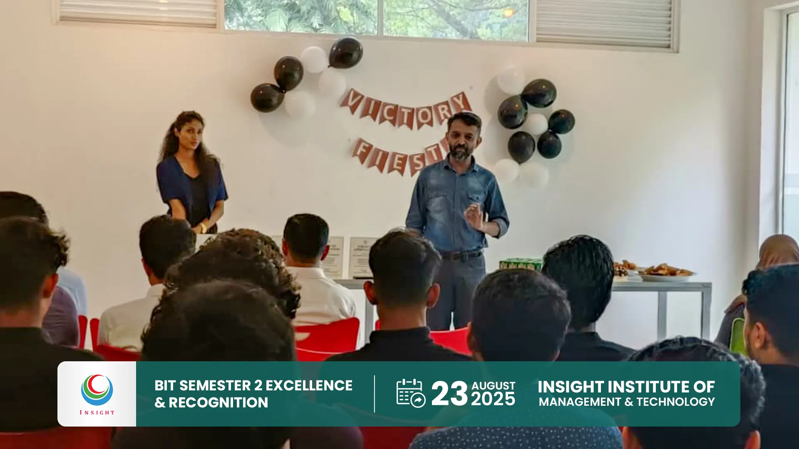
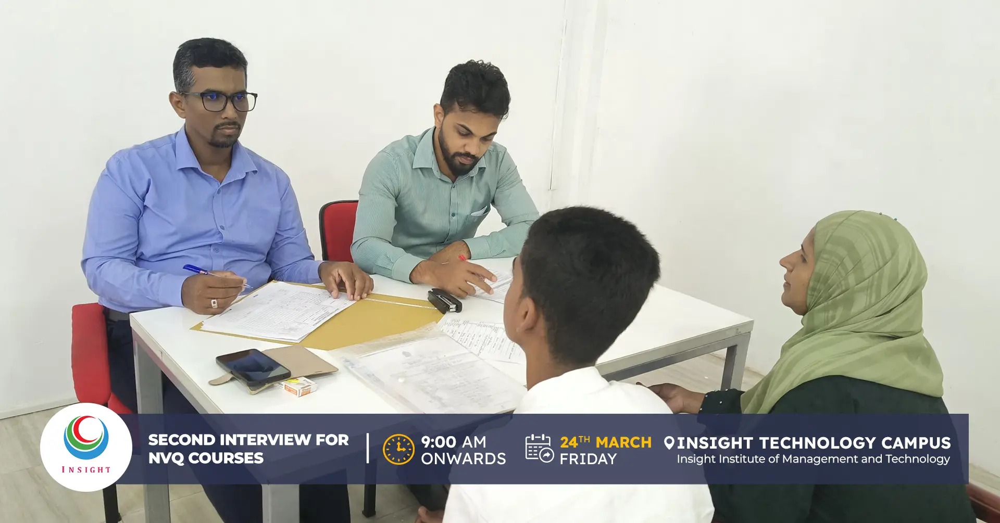
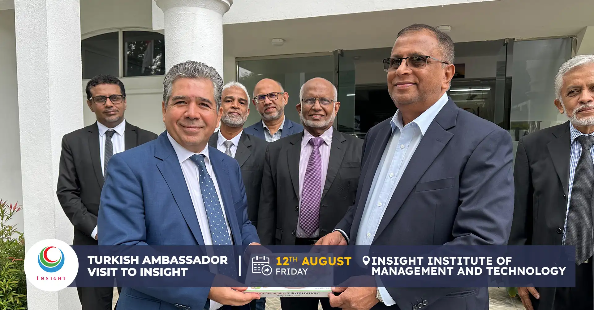
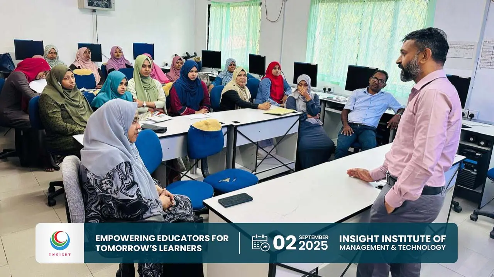
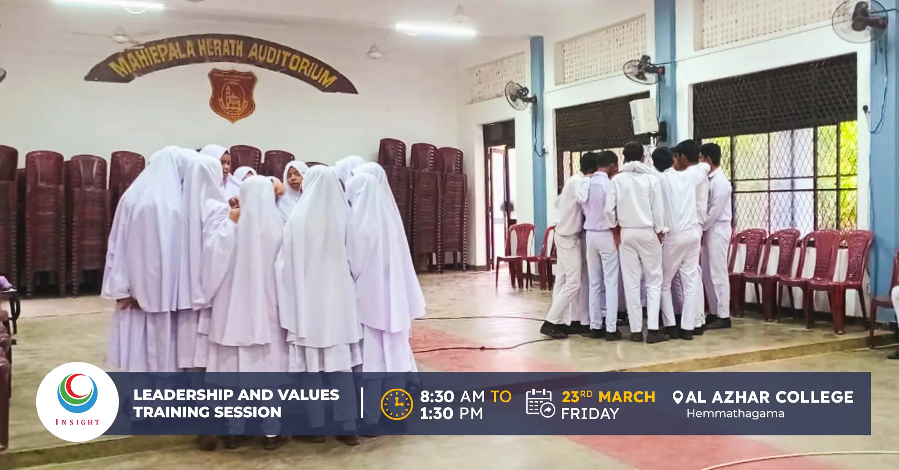
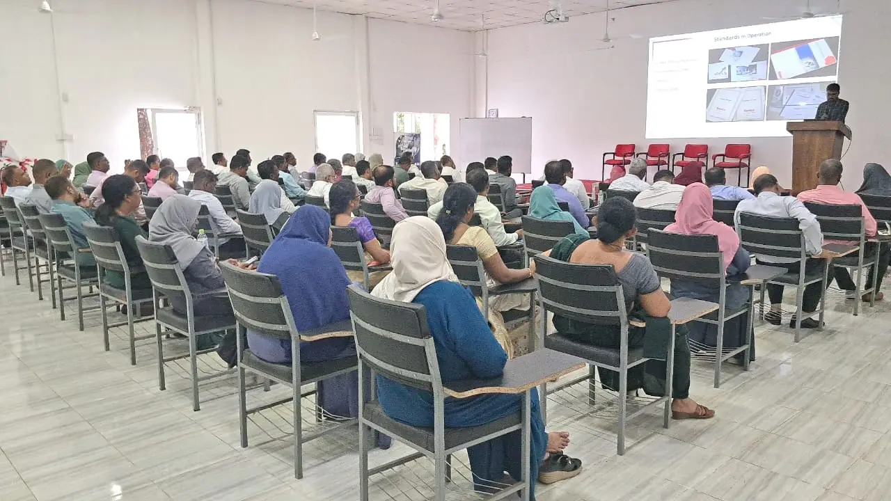
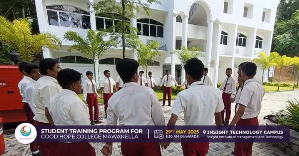
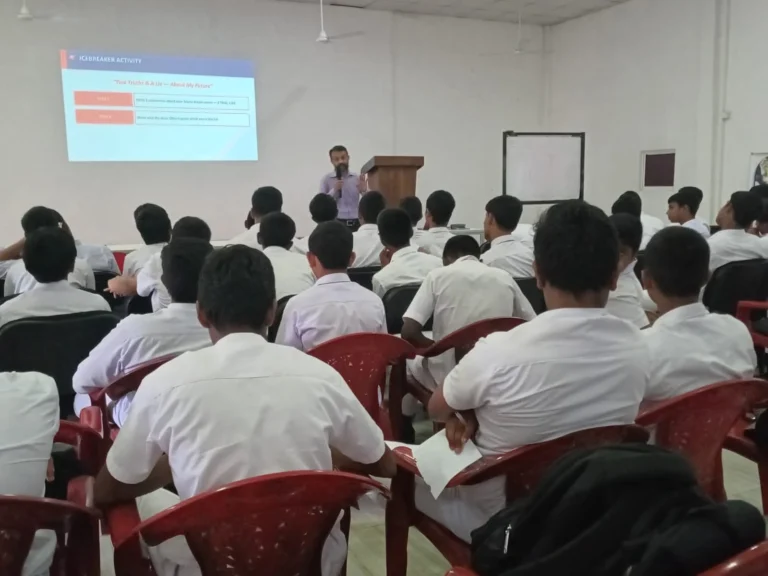

A Celebration of Success & Appreciation
We proudly celebrate the outstanding success of our BIT Semester 2 students, whose hard work and determination have turned aspirations into achievements.
Read MoreUpdates on institutional milestones, new academic and vocational partnerships, scholarship and donor announcements, graduation ceremonies, and community events from across the Insight Foundation network.
News and announcements from across our three institutions — updated regularly.

IIMT CampusWe proudly celebrate the outstanding success of our BIT Semester 2 students, whose hard work and determination have turned aspirations into achievements.
Read More Academic
AcademicWe welcomed our newest batch of students to the Insight family — the 2025 intake for the Department of Engineering Technology.
Read More
VocationalWe successfully conducted student interviews for NVQ Level 3 & 4 programs in Automobile, Electrical, ICT, Graphic Designing, and Computer Hardware at Mawanella campus.
Read More
PartnershipWe welcomed His Excellency the Turkish Ambassador to IIMT, continuing collaboration through TİKA to enhance our facilities and educational programmes.
Read More Partnership
PartnershipWe hosted H.E. Ahmed Ali Said Al-Rashdi, Ambassador of Oman to Sri Lanka, and Mr. Said Ali Nasser Al-Harbi for discussions on educational collaboration and employment pathways.
Read More
AcademicA teacher training program on Empowering 21st-Century Learners was conducted for teachers of Kad/Kurukuthala Maha Vidyalaya, focused on preparing children for contemporary change.
Read More Community
CommunityIIMT hosted a training session for volunteer teachers of Vision Dehiyanga, introducing activity-based English teaching methods for Grade 3 students in the Kandy district.
Read More
CommunityInsight Technology Campus conducted a Leadership and Values Training for prefects of Al Azhar College, Hemmathagama, building character, communication, and team spirit.
Read More
PartnershipWe hosted Principals and Education Directors from the Central Province (Tamil Medium) in collaboration with Zam Zam Foundation for a workshop on future-ready education.
Read More
AcademicWe hosted the students of Good Hope College Mawanella at Insight Technology Campus for a dynamic training session on personal development, leadership and teamwork.
Read More
IIMT CampusEmpowering O/L and A/L students through productive and inspiring sessions conducted by Dr. N.M. Mohamed Fazal, Chief Operating Officer of IIMT Campus, focusing on contemporary topics and personal development to help students build a brighter future.
Read More